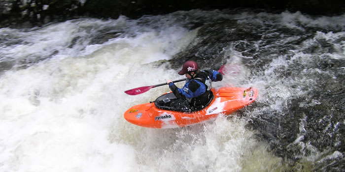

Kayaking Page
Many different types of kayaking are available at locations across Scotland. Paddle through some of the country's most beautiful scenery on a Scottish loch or river. Or explore caves and secluded beaches by taking a sea kayaking trip along our stunning coastline.

White water kayaking in Scotland
Here are a few suggestions for kayaking in Scotland
- River Tay - one of Scotland's longest and most famous rivers offers steady conditions for beginners and experienced paddlers
- Loch Lomond - paddle on the largest body of fresh water in Great Britain
- Isle of Skye - visit the sea cliffs, arches and tunnels all along the spectacular coastline
Return to Home page